IBM Cloud Code Engine - run Javascript jobs using cron event producer
What is Code Engine?
IBM Cloud Code Engine (CE) is a fully managed serverless platform designed to simplify and accelerate the deployment of containerized applications.
It enables developers to focus on writing code without the burden of managing the underlying infrastructure. Code Engine abstracts away the complexities of container orchestration, auto-scaling, and server provisioning, allowing users to effortlessly deploy applications in a serverless fashion.
With its seamless integration with popular container orchestration tools like Kubernetes, Code Engine offers flexibility and scalability, making it an ideal choice for both beginners and experienced developers.
Whether deploying microservices, APIs, or batch jobs, Code Engine streamlines the development process, enabling rapid innovation and reducing time-to-market for applications. Its pay-as-you-go pricing model ensures cost-effectiveness, making it an attractive solution for businesses looking to optimize their cloud infrastructure.
What are Code Engine Jobs?
In IBM Cloud Code Engine, Jobs are a key concept for running batch workloads or one-time tasks without the need for continuous application execution. Jobs allow developers to execute containerized workloads at scale, efficiently handling tasks such as data processing, data analysis, or periodic batch jobs.
Users can define the desired resources, such as CPU and memory, and Code Engine takes care of dynamically provisioning the required infrastructure. With Jobs, developers can leverage the serverless paradigm to execute tasks without worrying about the underlying infrastructure, enabling efficient resource utilization and seamless scalability for batch processing in the cloud.
What are Code Engine Events?
In IBM Cloud Code Engine, Events are a powerful mechanism for triggering and automating the execution of serverless functions or applications. Code Engine Events enable developers to respond to various external stimuli, such as changes in data, incoming messages, or scheduled time intervals.
By defining event sources, such as message queues, object storage changes, or HTTP requests, users can seamlessly connect their applications to external triggers. This event-driven architecture allows for the automatic scaling and execution of code in response to specific conditions, providing a flexible and dynamic way to build reactive and responsive cloud applications.
Code Engine Events enhance the serverless experience by enabling developers to create workflows that respond to real-time events, enhancing the agility and responsiveness of cloud-native applications.
In the tutorial below, we will create the following:
- Code Engine project
- Javascript function
- Code Engine Job
- Code Engine Event
- Code Engine Build
Pre-requisites
- Terminal basic knowledge
- IMB Cloud account
- IBM Cloud CLI in your terminal
- Node and npm installed in your terminal
1. Login to IBM Cloud and install CE CLI
-
Login to IBM Cloud.
Basic:
ibmcloud loginExample with one-time passcode
ibmcloud login -a https://cloud.ibm.com -u passcode -p <one-time passcode> -
Target the resource group
ibmcloud target -g <resource_group> -
Install code engine plugin. More info - Code Engine CLI.
ibmcloud plugin install code-engine -
Check if it was installed
ibmcloud plugin listOutput example:
Plugin Name Version Status code-engine/ce 1.36.0
2. Create a project
Source - Managing projects
A project is a grouping of Code Engine entities such as applications, jobs, and builds. A project is based on a Kubernetes namespace. The name of your project must be unique within your IBM Cloud® resource group, user account, and region. Projects are used to manage resources and provide access to its entities.
-
Go to Code Engine -> Projects and click
Createbutton. -
Choose a location to deploy the project.
-
Enter a name for the project. The name must be unique for all your projects within the specified location.
-
Choose the resource group where you want to create the project.
-
Click
Create.Creating a project with the CLI. When you create a project, it is automatically selected as the current context. To create a project that is not automatically selected, use the
--no-selectoption. -
Create a project with the
project createcommand. Use a project name that is unique to your region.ibmcloud ce project create --name <PROJECT NAME> -
Verify that your new project is created with the
project getcommand.ibmcloud ce project get --name <PROJECT NAME>You can also list all projects and this output displays which project is your selected project. In the following example,
myprojectis the project that is selected as the current context.ibmcloud ce project list -
Select available project by its ID
ibmcloud ce project select -id <project ID> -
Check if the project is currently selected
ibmcloud ce project currentOutput example:
Name: Excel reports ID: <ID> Subdomain: <Subdomain> Domain: us-east.codeengine.appdomain.cloud Region: us-east Kubernetes Config: Context: 198d99fbpz8o Environment Variable: SET "KUBECONFIG=~/.bluemix/plugins/code-engine/Excel reports-4835ea34-5a19-4789-9ab0-da35bbc92f39.yaml"
3. Create a Javascript function
We will need a runnable code that will be triggered by the Job. This function will be stored on Github and Dockerized into container image stored in an image repository of IBM Cloud.
-
Open your code editor, create new project directory, and create a node application with:
npm init -
Create an
index.jsand add your code. For example:function main() { let msg = 'You did not tell me who you are.'; if (process.env.API_KEY) { msg = `Hello, ${process.env.API_KEY}!` } else { msg = `Hello, Functions on CodeEngine!` } return { headers: { 'Content-Type': 'text/html; charset=utf-8' }, body: `<html><body><h3>${msg}</h3></body></html>` } } main(); -
Add any environment variables to your project. In the above code we are using
process.env.API_KEYthereforeAPI_KEYhas to be added into a Config Map as env. variable.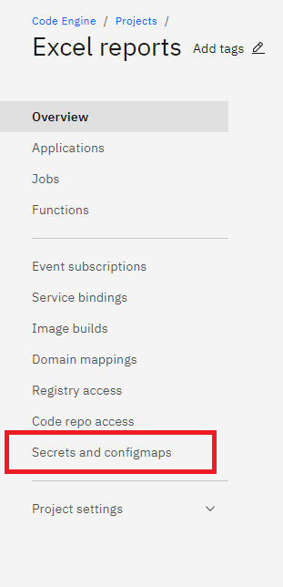 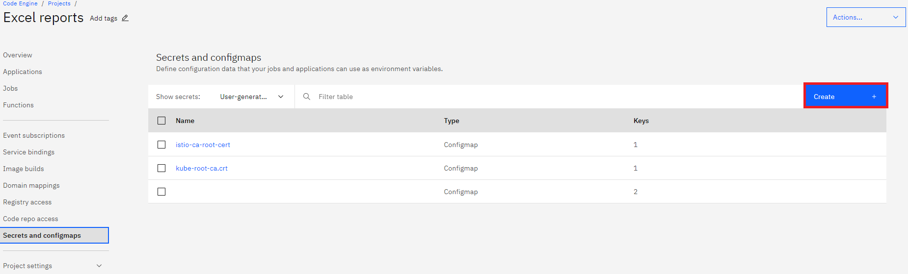 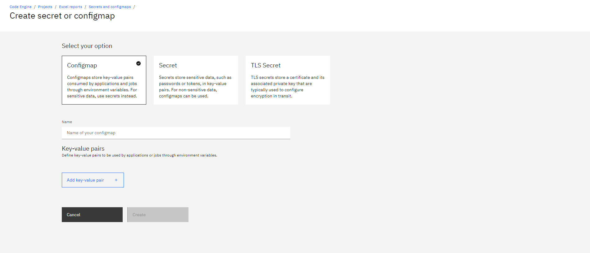
-
Add key value pairs and click
Createbutton. -
Add newly created config map to your job. Go to Job -> Configuration tab -> Environment variables.
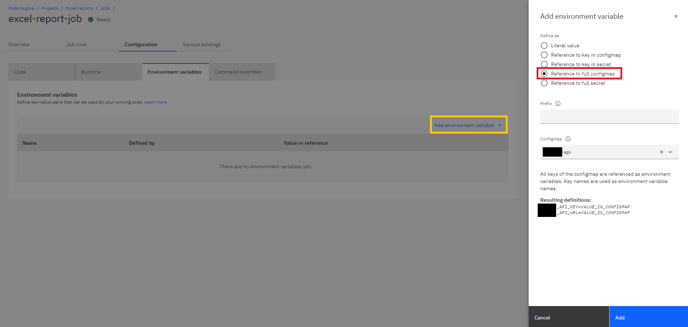
No need to adding prefix when your env. variables already are prefixed. Otherwise, please add a prefix. Click
Add.Remember to click “Save” before leaving this page!
You can also create a config map using your CLI.
-
Create
Dockerfilein the root of your function project. Here’s an example of a node.js DockerfileFROM node:20-alpine COPY index.js /app/index.js COPY package.json . WORKDIR /app RUN npm install ENTRYPOINT ["node", "index.js"] -
A good practice is to add a
.dockerignoreand.ceignorealongside of.gitignore. -
Also, at this point it’s highly recommended to read documentation on Configuring project-wide settings
-
When you’re ready with the above, you can push your code to a Private or Public repo on Github. For this tutorial, we will use the Github repo as a source for the Container Image build.
4. Create a job
Source - Working with jobs and job runs
Definition of a Job on IBM Cloud Code Engine:
A job runs one or more instances of your executable code. Unlike applications, which handle HTTP requests, jobs are designed to run one time and exit. When you create a job, you can specify workload configuration information that is used each time that the job is run.
There are three sources for a job:
- container image
- source code that is located in a Git repository
- source code on a local workstation
This tutorial will show you how to create a job based on source code that is located in a Git repository.
-
Go to your project at IBM Cloud Code Engine and click
Createbutton on the top, right corner. SelectSource Codeto build container image from source code.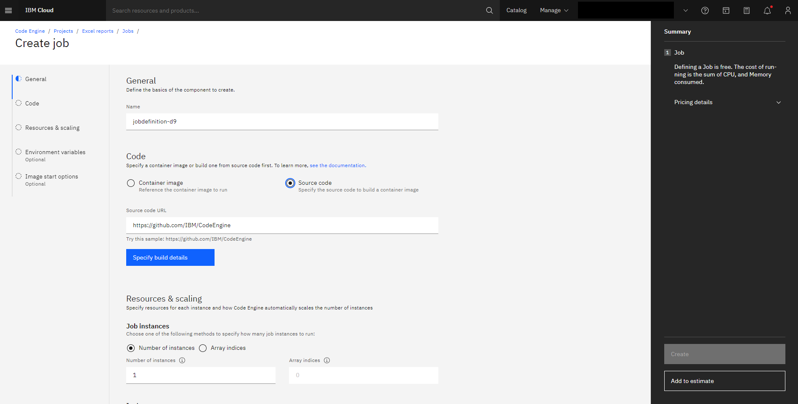
-
Select resources that will be consumed every time a job runs. It’s good to keep it small as this job won’t require significant CPU/RAM and Storage. Keep the rest of the settings as default.
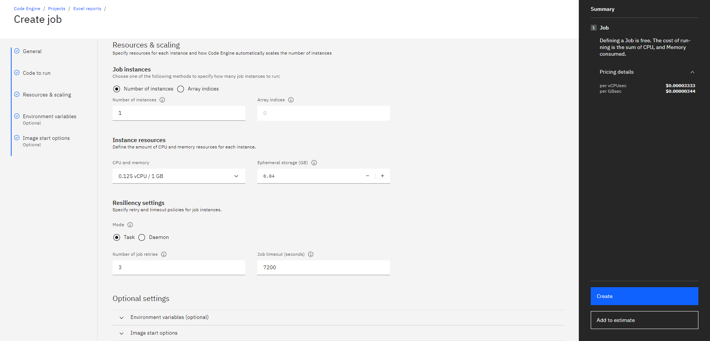
-
Click on the
Specify build detailsbutton. A Sidebar will open with container image build settings. Select a source repository - it should be the repository location where you pushed your function in the previous step. You can optionally provide a branch name. If you do not provide a branch name and you leave the field empty, Code Engine automatically uses the default branch of the specified repository. ClickNext. -
On the next screen, select
Dockerfileas an option and select your preferred build resources. LeaveDockerfileinput field as is. ClickNext.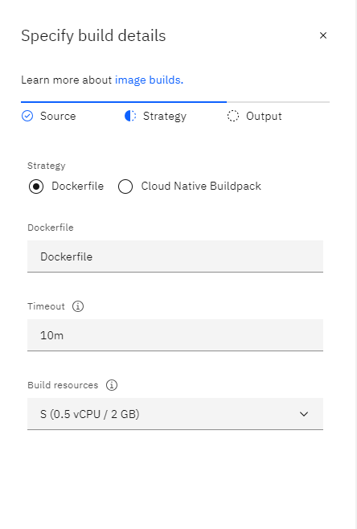
-
On the
Outputscreen, selectprivate.icr.ioas your default Registry Server, leave Registry access secret as is, select a Namespace and provide an image name. Set Tag tolatest. This way, your image will always end up with thelatestversion. If your registry is private, you must set up access to it. -
Select an existing Registry access secret or create a new one. If you are building your image to an IBM Cloud Container Registry instance that is in your account, you can select
Code Engine managed secretand let Code Engine create and manage the secret for you. -
Select a namespace, name, and a tag for your image. If you are building your image to an IBM Cloud Container Registry instance that is in your account, you can select an existing namespace or let Code Engine create and manage the namespace for you.
-
Click Done.
-
Now you should see a summary and you should remember to click
Saveabove.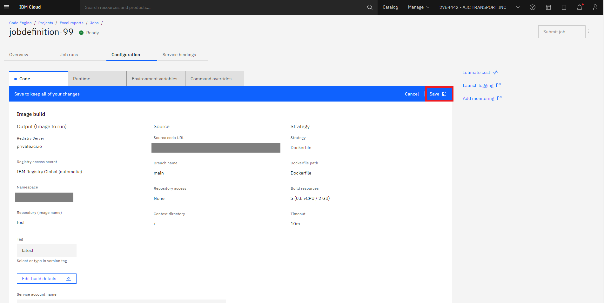
You can also create a job using the terminal CLI like so:
ibmcloud ce job create --name myjob-repo --build-source https://github.com/<YOUR REPO>You can read more about this CLI command here.
-
The first Image build will run and it should come back as successful. You will know by looking at the
Build run status.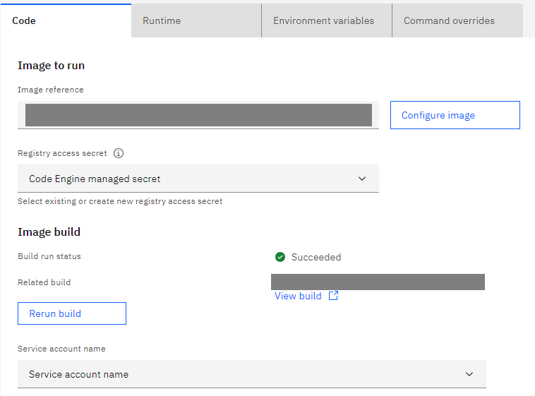
-
From this moment, whenever you change something in your code, you should push the changes to Github and then you should build the container image again. You can do it by using a CLI command in your terminal.
ibmcloud ce buildrun submit --build <Build Name>The Build Name can be acquired by visiting the
Image Buildssection. 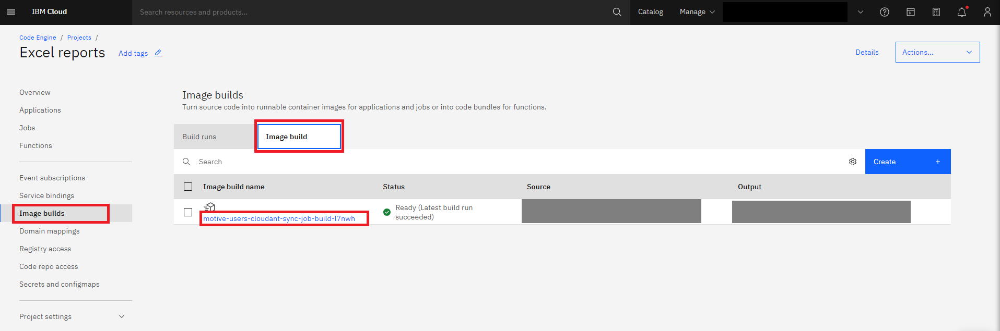Remember! Every time you’re building a new image, you’re overwriting the previous container image. It is because we’re overwriting the
latestimage version. -
When your images are up-to-date and successfully built, you can run a job again. Triggering a job can happen either from the UI or the terminal.
-
Terminal:
ibmcloud ce jobrun submit --name <UNIQUE JOB NAME> --instances 1 -
UI:
Click
Submit Jobfrom the Job section’s top right corner. In the Sidebar, leave instances set to 1 and clickSubmit job. 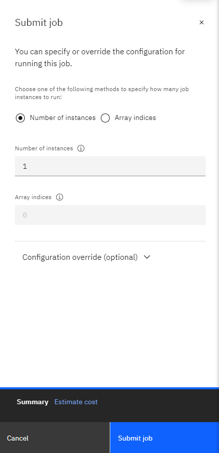
-
-
You can check the Job run status by running:
ibmcloud ce jobrun get -n <UNIQUE JOB NAME> -
Also, you can check the logs from the job run:
ibmcloud ce jobrun logs -f -n <UNIQUE JOB NAME>
5. Create Event subscriptions - cron
Source - Getting started with subscriptions
-
Create Event subscriptions (Create event subscriptions to send events to your application or job consumers.) - click
Createbutton. 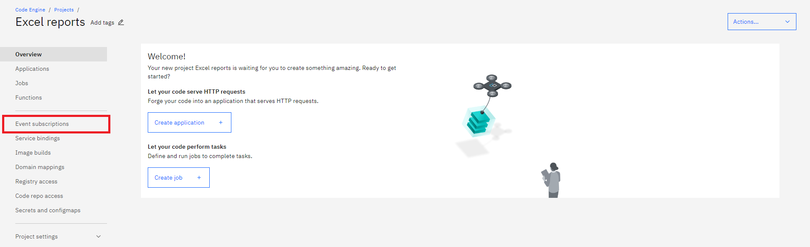 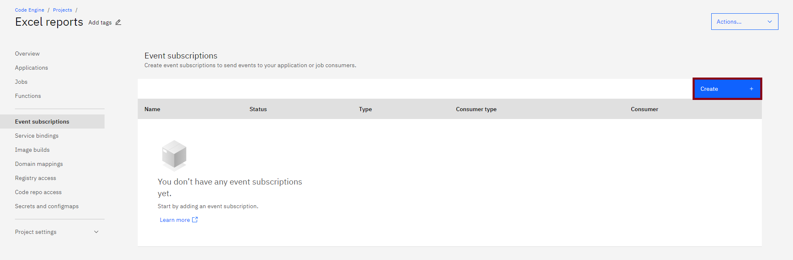 -
Select Periodic timer and name the subscription event. Click
Next. 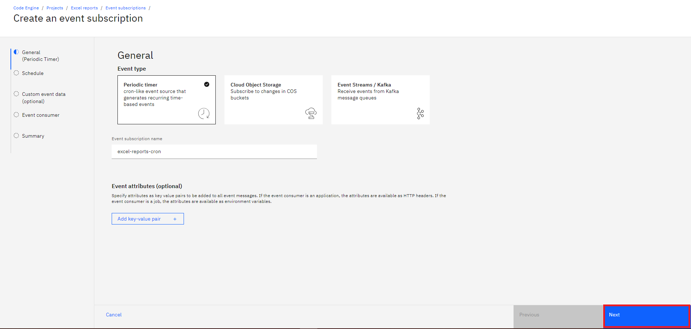 -
Set a cron schedule and click
Next. If you need more information, you can find it here - Working with the Periodic timer (cron) event producer 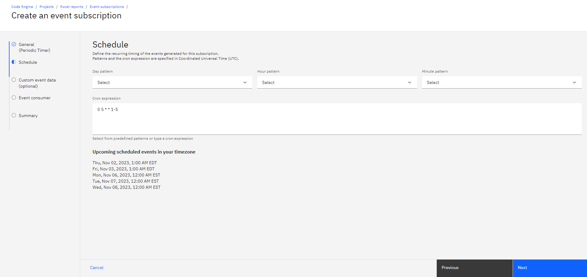 -
Click
Nexton the next screen. -
Select a component that will receive events - the job. Click
Next. 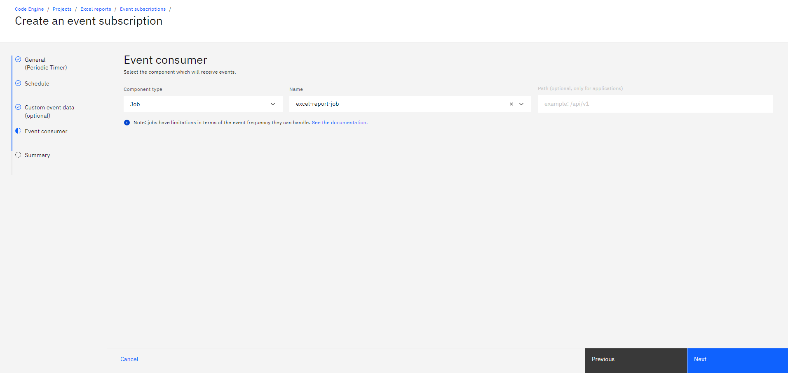 -
View the summary page and Click
Create. 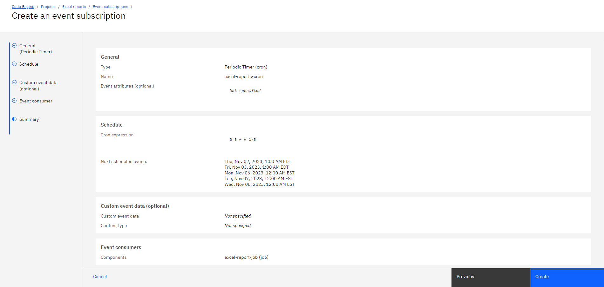There’s a way to create an event subscription using the CLI:
For example, to create a cron subscription that sends an event to a job every 5 minutes:
ibmcloud ce sub cron create --name <EVENT NAME> --destination-type job --destination <JOB NAME> --schedule '*/5 * * * *'
6. Create a build and run build
Source - Planning your build
A build, or image build, is a mechanism that you can use to create a container image from your source code. Code Engine supports building from a Dockerfile and Cloud Native Buildpacks.
-
Go to
Projects -> Image Buildsand click TabImage build. ClickCreatebutton. -
Specify build details by targeting your code repo on Github. If your repo is Private, then
Create Code Repo Access. If you’re using a Public repo, skip the next steps until step 6. -
For Private repos, you will need to access them using an SSH URL instead of an HTTP or HTTPS URL. An example of an SSH URL is ‘git@github.com:IBM/CodeEngine.git’.
-
For Private repos, you will also need the Code repo access. If you can’t see any options in the dropdown, it means that you need to create it first on a different page. Go to main Overview of the Project and on the left sidebar, click
Code repo access. Then, clickCreatebutton in the top right corner. A new sidebar opens on the right. Enter the name. -
For the SSH private key, you will need to copy it from your local machine’s
~/.ssh/...(ex.cat ~/.ssh/id_ed25519) and paste it in here. If you don’t have one created yet for your Github account, please visit Generating A New SSH Key and follow the steps. 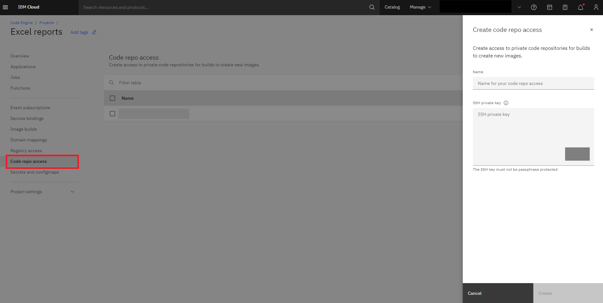You can also update your Git Repo Secret using the CLI like so:
ibmcloud ce build update --name <name-of-your-buld> --git-repo-secret <name-of-your-secret>To check if it updated successfully:
ibmcloud ce build get --name <name-of-your-buld> -
Choose the branch which usually is
mainbut maybe you want to build another branch. You can also specify the Context directory because your function and Dockerfile are stored in a directory and not the root of the repo. -
On the next screen I advise you to leave defaults although you may want to use a different Build resources configuration. I recommend starting from the smallest.
-
On the last screen, choose Registry Server. If you’re in the US, I recommend
private.us.icr.iofor the IBM default registry. Your registry can be also the Docker registry. If you have the Registry access secret, please specify. If not, leave the default asCode Engine managed secret. Select Namespace or type in your own. Name the Image and tag the builds. I recommend thelatestfor the Tag. ClickDone. -
Click your build configuration from the list. From this screen, you can click on
Submit buildwhich will build your image and save it into the registry. 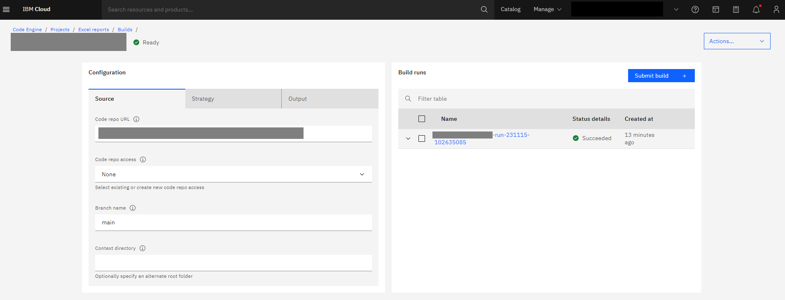Now, every time you need a new build, you can use your CLI in the terminal like so:
ibmcloud ce buildrun submit --build <Build name>If you’re not sure what the build name is, you can get a list of available build names like so:
ibmcloud ce build list